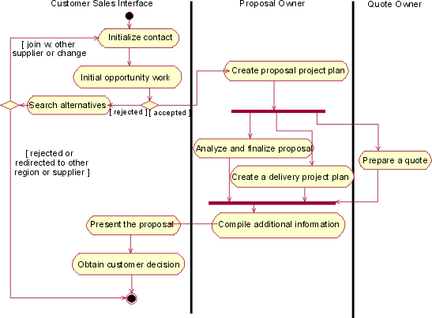
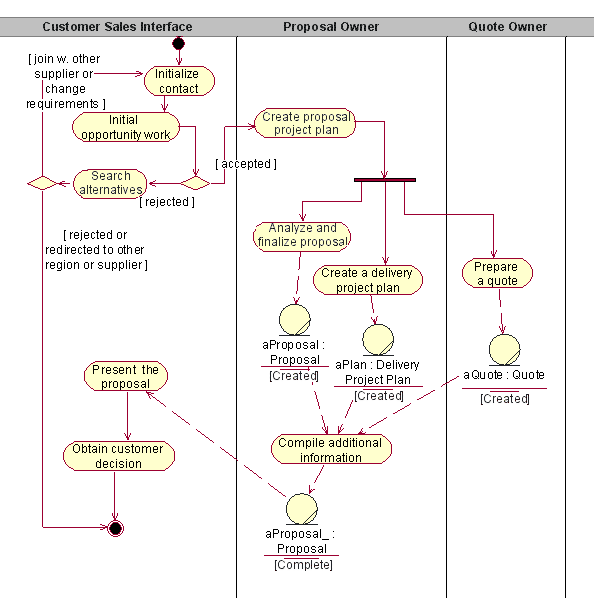
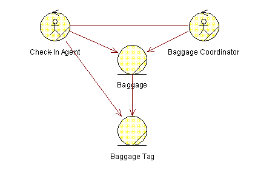
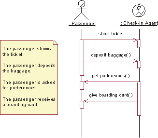

| Рекомендация: Business Analysis Modeling Workshop |
 |
|
| Связанные элементы |
|---|

This workshop focuses on ftinding business workers and business entities that participate in one business use-case realization. A productive way of working is to gather a group of 3-7 people, use a whiteboard, easel, and Post-it?Notes. As the workshop progresses, your results should fill the walls of the room, making sure that everyone can see and compare the different types of diagrams that will show different aspects of the realization of a business process. These diagrams are here presented in a sequence you would introduce them, but once introduced they will evolve in parallel. Study the workflow of a business use-case. Mark each section in your text to show responsibilities that would fit on one business worker or business entity. Or,if you have drawn an activity diagram for the workflow, mark up activity states in the diagram. Use two colors of Post-it? Notes: one for business workers,and one for entities. Create a new activity diagram, with one swimlane for each business worker that you a this point know is participating. Discuss how tasks are divided among the participating business workers - some tasks may need to be split,some could be merged.  Example of activity diagram with swimlanes. Once you understand what responsibilities each business worker has, you may start to add the business entities into the picture using object flows in the activity diagrams. However, to avoid clutter you often need to limit the business entities you show to those that are primary to the workflow. For details of business entities class diagrams are a better choice.  Example of an activity diagram with object flows added. To summarize your results, you can create class diagram that shows the business workers and the primary business entities. In this class diagram, you can also start to add the relationships between business workers and business entities that are necessary to perform the workflow of the business use-case realization. If the number of business workers and business entities is large, you mayneed several diagrams. The following is recommended:
 A class diagram shows how business workers and business entities are related to perform a business use-case realization workflow. As previously mentioned, it can be useful to in a separate class diagram keep track of the business entities on how they need to be related.
A class diagram showing the business entities and their relationships. Sequence diagrams, which are often more descriptive than activity diagrams, are good for describing the workflow in the following situations:
If the number of business workers and business entities is large, you mayneed several sequence diagrams. Our recommendations for communication diagrams are also valid for sequence diagrams. Start with the use-case realization?snormal workflow, following its structure. Continue with alternative subflows. To draw a sequence diagram of a business use-case realization, do the following:
 A sequence diagram documents how business workers interact and handle business entities to perform the workflow of a businessuse-case realization.
When you are ready, save the information about each business worker and business entity (which tasks it is supposed to
perform). You will describe them later. Save the information about the business use case and its realization by copying
the contents of the whiteboard. A great way of copying is to take a picture of the whiteboard with a digital camera. A
digital picture can be shared on a project home page. |
© Copyright IBM Corp. 1987, 2006. Все права защищены.. |